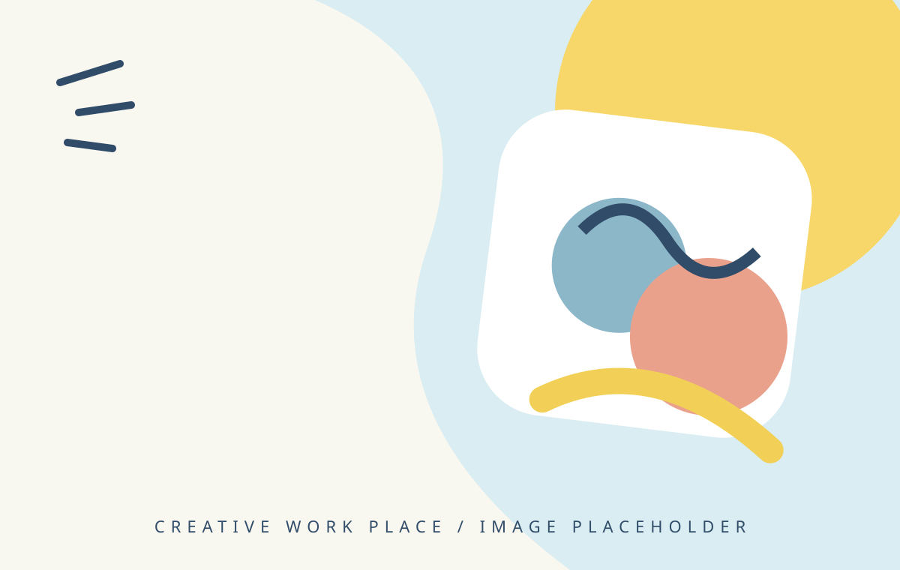
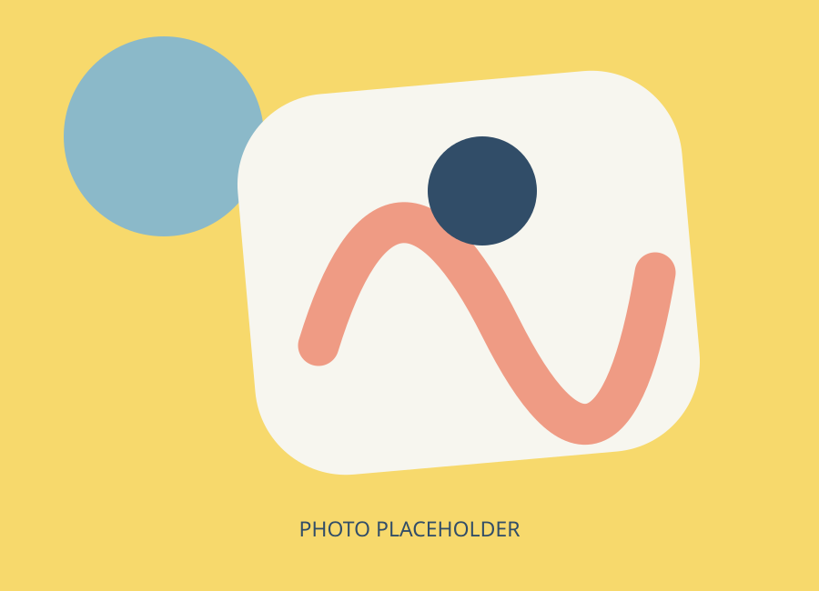

01
01CRAFT & HANDMADE
ものづくり
編み物、パンチニードル刺繍、ハンドメイド雑貨、レザークラフト小物など。作品はセレクトショップやマルシェ等で不定期に販売しています。
MAKE SOMETHING YOUR OWN
やってみたい、を大切に。
ここから少しずつ始めよう。
クランは、ものづくりや内職を通して
あなたらしい働き方を応援する場所です。

メイン写真は後日差し替え予定MAKE一人ひとりのペースや「やってみたい」という気持ちを大切にしながら、内職やものづくりなど、さまざまなお仕事に取り組んでいます。
無理なく自分に合った「働く」を一緒に見つけ、安心して過ごしながら豊かな経験を重ね、新しい可能性を広げられる場所を目指しています。

WELCOME TO CLAN!できることから、ひとつずつ。
あなたに合う仕事を一緒に探します。
01CRAFT & HANDMADE
編み物、パンチニードル刺繍、ハンドメイド雑貨、レザークラフト小物など。作品はセレクトショップやマルシェ等で不定期に販売しています。
 02
02LIGHT WORK
手順を確認しながら、コツコツ丁寧に取り組める作業です。自分のペースで進められます。
今ある仕事だけでなく、あなたの希望や得意に合った仕事も積極的に探します。
ノルマなし。無理なく取り組めます。
短時間の利用も相談できます。
スタッフと一緒にできることから。
販売を通じて社会とのつながりを。
午後は3時のおやつの時間。
曜日や短時間利用もご相談ください。
利用開始まで、スタッフが一緒に進めます。気になることは何でもご相談ください。
工賃例：週5日・1日5時間利用の場合、月16,000円 ※工賃は作業内容や利用状況等によって異なります。
LET'S TALK
見学・体験のご相談、お気軽にお問い合わせください。